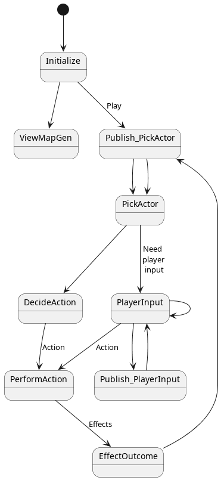

The overall state machine is as follows:
[*] --> Initialize
Initialize --> ViewMapGen
Initialize --> Publish_PickActor : Play
Publish_PickActor --> PickActor
PickActor --> PlayerInput : Need \n player \n input
PickActor --> MobAct
PlayerInput --> PlayerInput
PlayerInput --> PerformAction : Action
PlayerInput --> Publish_PlayerInput
Publish_PlayerInput --> PlayerInput
MobAct --> PerformAction : Action
PerformAction --> EffectOutcome : Effects
EffectOutcome --> Publish_PickActor

More specifically:
Action
Actions are fixed number inputs from mobs or the player. Depending on their current status, for example equipment, different kinds of effects will be produced.
Effect
Effects are the "events happened in the world", for example:
- Spatial changes
- something is moved to somewhere
- Chrono changes
- the clock is updated to a newer value
They are not the direct outcomes though: They can be modified or canceled. For example:
- spatial changes can be canceled if the position the target is moved into is somewhere cannot be entered
- attack damage will be reduced based on the target's armor and resistance.
So actions are active things to do, effects are the passive effects to the target affected by the actions.
Turns
The game loop is more or less ATB-based and energy-based. Each mob
(including the player) unit has a timestamp, and at PickActor state the one with the lowest
timestamp in the priority queue is picked. If it is controlled by the
player, the game switches to PlayerInput
state where the UI inputs are listened; otherwise, it goes to the MobAct state, where the AI (in the good old
sense) decides the action to perform.
In either case, once the chosen mob has decided what to do, the game
switches to PerformAction state. Based on
the given action, effects are produced. It is very likely that an ChornoChange effect is produced, which updates
the actor's timestamp and thus puts it into a later position in the
priority queue.
How Inspection Fits into This Architecture?
Inspection is an action that produces journals that displayed to the UI. It does not produces any real effects.
This might subject to change.
How Debuff (like Poison) Fits into This Architecture?
I have a quick and dirty imagined solution that basically have some invisible "gods" that performs actions in a fixed interval, to all mobs that carry the corresponding debuff.
For example, if a mob is poisoned, the God of Poison performs direct damage to it every 100 time unit.
How Attack Fits into This Architecture?
Consider that the player has decided to attack a slime. So the
transition is from PlayerInput to PerformAction. Nothing fancy goes on in this
transition, and the PerformAction state
gets the actor (the player), the target (the slime) and the action
(Attack).
Perform the Action
Say the player has a "sword of flame, the Slime Slayer" as its weapon.
The following effects are produced, based on the player's stats:
- A "Raw Damage" effect on the slime, which is mixture of physics and fire elements, amplified by the "Slime Slayer" bless, targeting the slime
- A "Time Update" effect on the player, say 100 unit of time.
Now the state is transitioned into EffectOutcome.
Apply the Effects
- Raw Damage
- The physical parts of the damage is reduced by the slime's armor. The flame parts of the damage is reduced by the slime's fire resistance. The values after that is subtracted from the slime's health.
- Time Update
- The timestamp of player is increased by 100